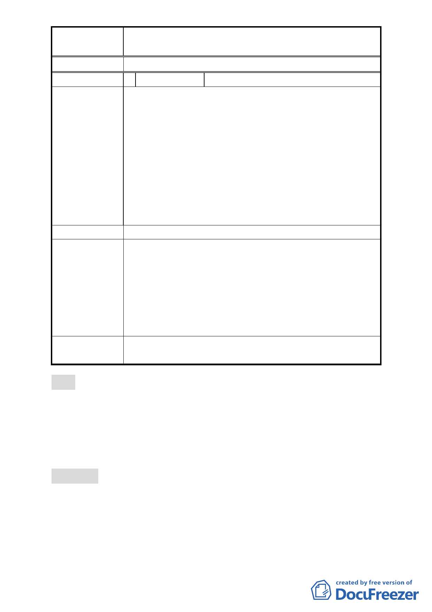

案
名
「擬定北投士林科技園區（區段徵收範圍）細部
計畫案」內市民住宅區等 4 處調整案
委 員 會 議 決 議 同編號 1。
編 號 4 陳情人 賴日韋賢
1. 市民住宅之每戶面積為何？如何訂定的？與台北市政
府辦理的其他地區的類似市民住宅或專案住宅的規劃
面積相同否？若不同其理由為何？
2. 市民住宅的抽籤作業方式？不了解抽籤方式？但是如
陳情理由
果原洲美里與原建民里的拆遷戶混合抽籤，則原建民
里的拆遷戶應有優先選擇建民里市民住宅來抽籤的權
利，以免抽到洲美里的市民住宅。
3. 本次調整案中「科技產業示範開發區調整案」的意義
是甚麼？欠缺書面詳細說明，口頭說明又不足。它對
於抵價地分配作業、對原地主權益的影響為何？
建議處理意見 同上。
1. 市民住宅設計公設比例、房型、抽籤資格等問題，非
屬本次計畫調整內容。
2. T16、T17、T18 等 3 處街廓並不影響區段徵收財務，且
市 府 回 應 意 見 對地主而言，可選擇機會雖變少，惟仍有其他 15 處科
技產業專用區可供選配。另考量市府招商引導產業發
展，可加速地區繁榮，更能保障地主參與區段徵收之
開發利益。
一、 同編號 1。
委 員 會 議 決 議 二、 依市府回應意見辦理。
肆、本次會議因時間已晚，討論事項三至討論事項十六以及兩案
臨時提案，於本週內另擇時間召開續會。另，爾後本會幕僚
於通知陳情公民或團體得到場旁聽或登記進場發言事宜時，
請針對渠等所關切案件，提供預估開始討論之參考時間，以
利民眾安排。
伍、散會（19：10）
- 14 -